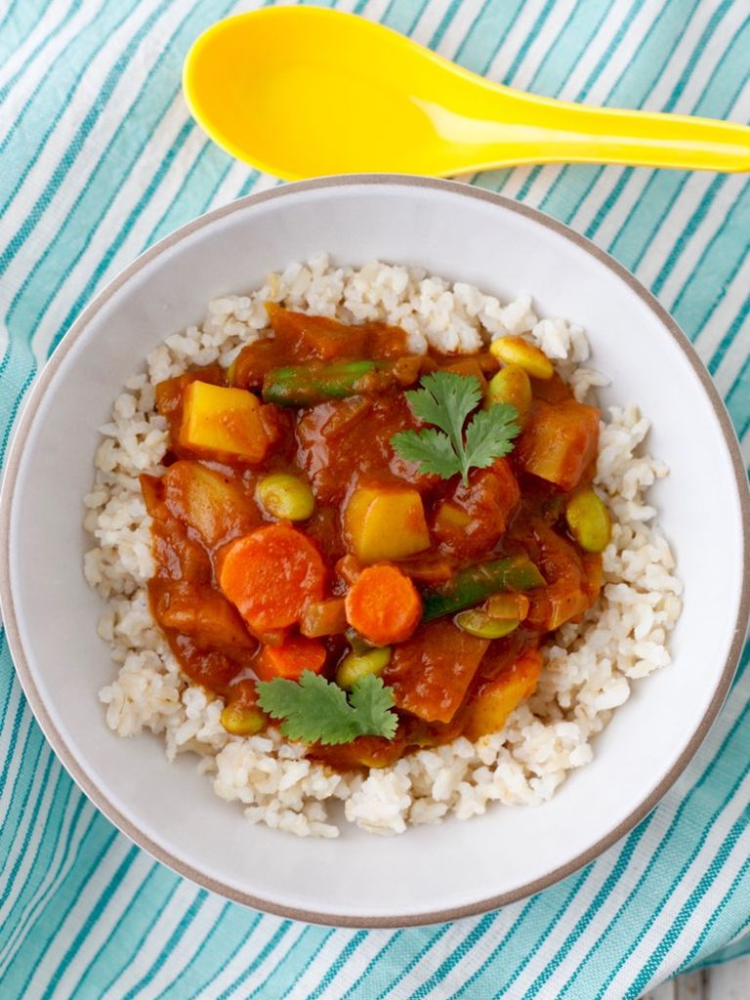

Curry

Description
I love Japanese curry. It's amazing!
You're gonna love it!
Ingredients
- Some vegetables you like and 2 potatoes
- A couple of curry roux cubes
- A sweetening agent, like maple, orange juice, etc.
Steps
- Cut the potatoes and vegetables into chunks
- Add the vegetables to a hot, oiled pan, mix well
- Add water and bring to a boil
- Use a fine mesh strainer to get clearer broth
- Add the sweetening agent and simmer uncovered for 20 minutes, stirring every 5 minutes
- Add the potatoes and cook until tender, around 15 minutes
- Turn off the heat and take pot off the hub, add the curry roux
- The curry is ready! You can choose to serve with rice if you'd like!